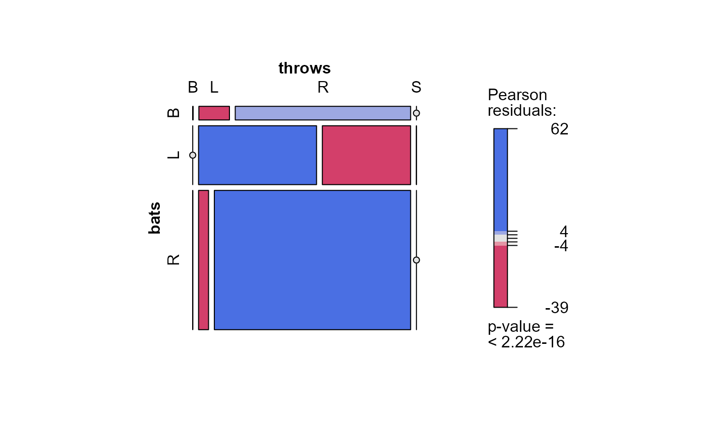

People table
People.RdPeople table - Player names, DOB, and biographical info. This file is to be used to get details
about players listed in the Batting, Pitching, and other files
where players are identified only by playerID.
Usage
data(People)Format
A data frame with 21010 observations on the following 26 variables.
playerIDA unique code assigned to each player. The
playerIDlinks the data in this file with records on players in the other files.birthYearYear player was born
birthMonthMonth player was born
birthDayDay player was born
birthCountryCountry where player was born
birthStateState where player was born
birthCityCity where player was born
deathYearYear player died
deathMonthMonth player died
deathDayDay player died
deathCountryCountry where player died
deathStateState where player died
deathCityCity where player died
nameFirstPlayer's first name
nameLastPlayer's last name
% \item{\code{nameNote}}{Note about player's name (usually signifying that they changed
% their name or played under two differnt names)}
nameGivenPlayer's given name (typically first and middle)
% \item{\code{nameNick}}{Player's nickname}
weightPlayer's weight in pounds
heightPlayer's height in inches
batsa factor: Player's batting hand (left (L), right (R), or both (B))
throwsa factor: Player's throwing hand (left(L) or right(R))
debutDate that player made first major league appearance
finalGameDate that player made first major league appearance (blank if still active)
retroIDID used by retrosheet, https://www.retrosheet.org/
bbrefIDID used by Baseball Reference website, https://www.baseball-reference.com/
birthDatePlayer's birthdate, in
as.DateformatdeathDatePlayer's deathdate, in
as.Dateformat
Source
Lahman, S. (2025) Lahman's Baseball Database, 1871-2024, 2025 version, https://sabr.org/lahman-database/
Examples
data(People); data(Batting)
## add player's name to Batting data
People$name <- paste(People$nameFirst, People$nameLast, sep=" ")
batting <- merge(Batting,
People[,c("playerID","name")],
by="playerID", all.x=TRUE)
## batting and throwing
# right-handed batters are much less ambidexterous in throwing than left-handed batters
# (should only include batters)
BT <- with(People, table(bats, throws))
require(vcd)
structable(BT)
#> throws B L R S
#> bats
#> B 2 189 1073 0
#> L 0 3135 2328 1
#> R 1 627 12309 0
mosaic(BT, shade=TRUE)

## Who is Shoeless Joe Jackson?
subset(People, nameLast=="Jackson" & nameFirst=="Joe")
#> [1] playerID birthYear birthMonth birthDay birthCity
#> [6] birthCountry birthState deathYear deathMonth deathDay
#> [11] deathCountry deathState deathCity nameFirst nameLast
#> [16] nameGiven weight height bats throws
#> [21] debut bbrefID finalGame retroID deathDate
#> [26] birthDate name
#> <0 rows> (or 0-length row.names)
subset(People, nameLast=="Jackson" & nameFirst=="Shoeless Joe")
#> playerID birthYear birthMonth birthDay birthCity birthCountry
#> 8987 jacksjo01 1887 7 16 Pickens County USA
#> birthState deathYear deathMonth deathDay deathCountry deathState
#> 8987 SC 1951 12 5 USA SC
#> deathCity nameFirst nameLast nameGiven weight height bats throws
#> 8987 Greenville Shoeless Joe Jackson Joseph Walker 200 73 L R
#> debut bbrefID finalGame retroID deathDate birthDate
#> 8987 1908-08-25 jacksjo01 1920-09-27 jackj101 1951-12-05 1887-07-16
#> name
#> 8987 Shoeless Joe Jackson
joeID <-c(subset(People, nameLast=="Jackson" & nameFirst=="Shoeless Joe")["playerID"])
subset(Batting, playerID==joeID)
#> playerID yearID stint teamID lgID G AB R H X2B X3B HR RBI SB CS
#> 49548 jacksjo01 1908 1 PHA AL 5 23 0 3 0 0 0 3 0 NA
#> 49549 jacksjo01 1909 1 PHA AL 5 17 3 3 0 0 0 3 0 NA
#> 49550 jacksjo01 1910 1 CLE AL 20 75 15 29 2 5 1 11 4 NA
#> 49551 jacksjo01 1911 1 CLE AL 147 571 126 233 45 19 7 83 41 NA
#> 49552 jacksjo01 1912 1 CLE AL 154 572 121 226 44 26 3 90 35 NA
#> 49553 jacksjo01 1913 1 CLE AL 148 528 109 197 39 17 7 71 26 NA
#> 49554 jacksjo01 1914 1 CLE AL 122 453 61 153 22 13 3 53 22 15
#> 49555 jacksjo01 1915 1 CLE AL 83 303 42 99 16 9 3 45 10 10
#> 49556 jacksjo01 1915 2 CHA AL 45 158 21 43 4 5 2 36 6 10
#> 49557 jacksjo01 1916 1 CHA AL 155 592 91 202 40 21 3 78 24 14
#> 49558 jacksjo01 1917 1 CHA AL 146 538 91 162 20 17 5 75 13 NA
#> 49559 jacksjo01 1918 1 CHA AL 17 65 9 23 2 2 1 20 3 NA
#> 49560 jacksjo01 1919 1 CHA AL 139 516 79 181 31 14 7 96 9 NA
#> 49561 jacksjo01 1920 1 CHA AL 146 570 105 218 42 20 12 121 9 12
#> BB SO IBB HBP SH SF GIDP
#> 49548 0 3 NA 0 0 NA NA
#> 49549 1 3 NA 0 0 NA NA
#> 49550 8 8 NA 0 3 NA NA
#> 49551 56 NA NA 8 6 NA NA
#> 49552 54 NA NA 12 15 NA NA
#> 49553 80 26 NA 5 10 NA NA
#> 49554 41 34 NA 5 13 NA NA
#> 49555 28 11 NA 3 3 NA NA
#> 49556 24 12 NA 3 8 NA NA
#> 49557 46 25 NA 5 16 NA NA
#> 49558 57 25 NA 7 19 NA NA
#> 49559 8 1 NA 0 5 NA NA
#> 49560 60 10 NA 4 17 NA NA
#> 49561 56 14 NA 7 16 NA NA
subset(Fielding, playerID==joeID)
#> playerID yearID stint teamID lgID POS G GS InnOuts PO A E DP PB WP
#> 66448 jacksjo01 1908 1 PHA AL OF 5 5 132 6 1 1 0 NA NA
#> 66449 jacksjo01 1909 1 PHA AL OF 4 4 108 10 0 2 0 NA NA
#> 66450 jacksjo01 1910 1 CLE AL OF 20 20 522 40 2 1 1 NA NA
#> 66451 jacksjo01 1911 1 CLE AL OF 147 NA NA 242 32 12 8 NA NA
#> 66452 jacksjo01 1912 1 CLE AL OF 150 NA NA 273 30 16 2 NA NA
#> 66453 jacksjo01 1913 1 CLE AL OF 148 NA NA 211 28 18 5 NA NA
#> 66454 jacksjo01 1914 1 CLE AL OF 119 NA NA 195 13 7 4 NA NA
#> 66455 jacksjo01 1915 1 CLE AL 1B 30 NA NA 284 15 7 12 NA NA
#> 66456 jacksjo01 1915 1 CLE AL OF 50 NA NA 68 6 3 0 NA NA
#> 66457 jacksjo01 1915 2 CHA AL OF 45 NA NA 84 6 5 1 NA NA
#> 66458 jacksjo01 1916 1 CHA AL OF 155 NA NA 290 17 8 5 NA NA
#> 66459 jacksjo01 1917 1 CHA AL OF 145 NA NA 341 18 6 4 NA NA
#> 66460 jacksjo01 1918 1 CHA AL OF 17 NA NA 36 1 0 0 NA NA
#> 66461 jacksjo01 1919 1 CHA AL OF 139 NA NA 252 15 9 4 NA NA
#> 66462 jacksjo01 1920 1 CHA AL OF 145 NA NA 314 14 12 2 NA NA
#> SB CS ZR
#> 66448 NA NA NA
#> 66449 NA NA NA
#> 66450 NA NA NA
#> 66451 NA NA NA
#> 66452 NA NA NA
#> 66453 NA NA NA
#> 66454 NA NA NA
#> 66455 NA NA NA
#> 66456 NA NA NA
#> 66457 NA NA NA
#> 66458 NA NA NA
#> 66459 NA NA NA
#> 66460 NA NA NA
#> 66461 NA NA NA
#> 66462 NA NA NA